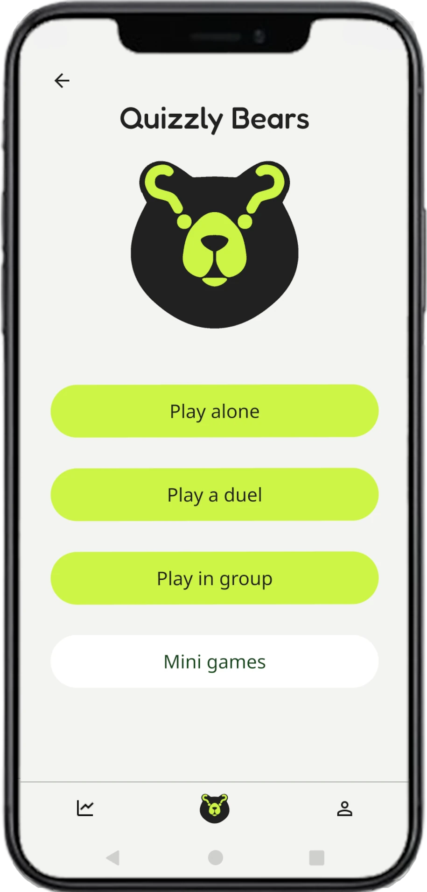
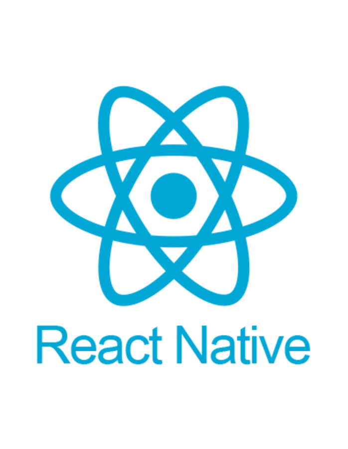
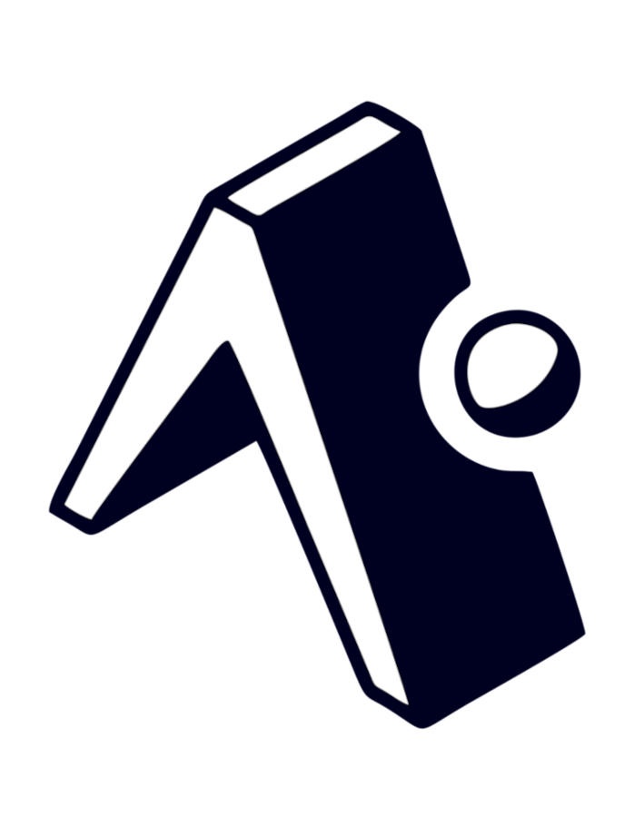
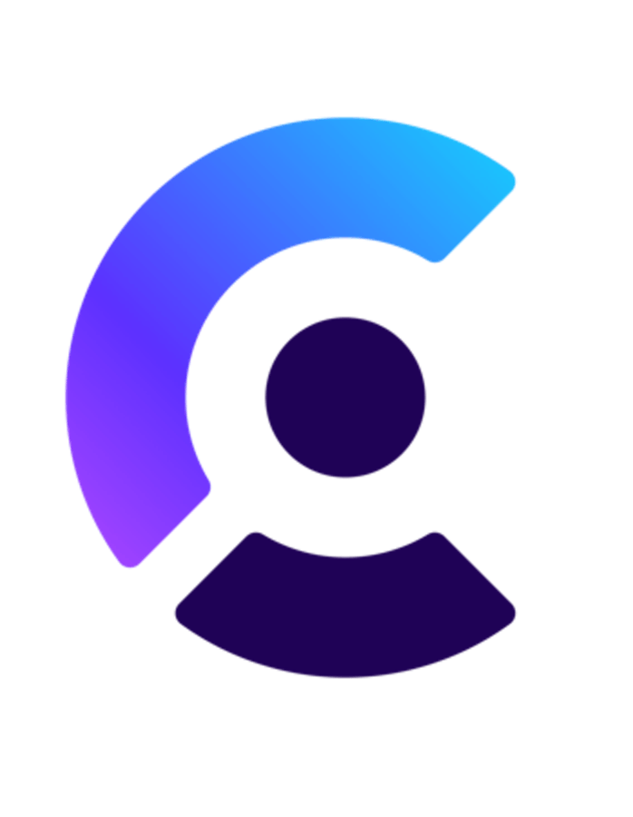
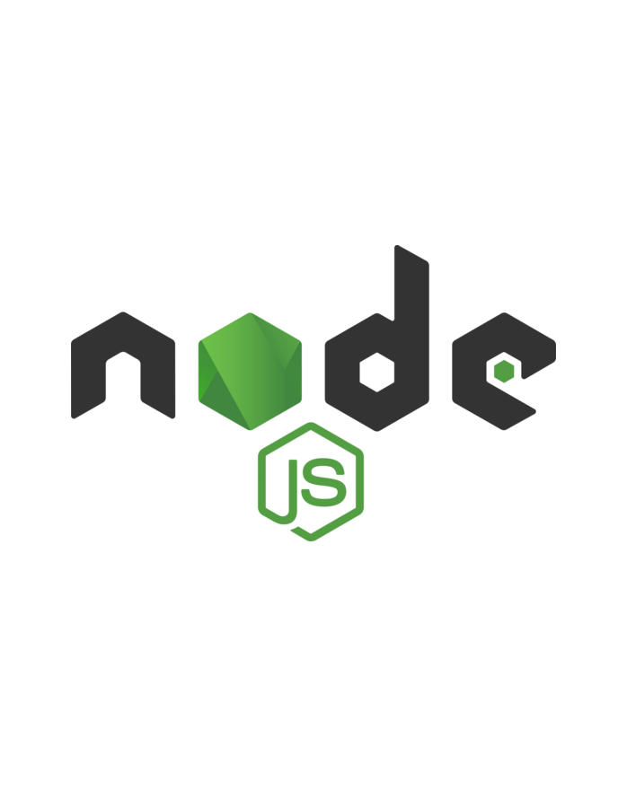

Quizzly Bears
Quizzly Bears ist mein umfassendes Abschlussprojekt an der DCI, das ich im
5-köpfigen Team entwickelt habe: eine interaktive Quiz-App der nächsten
Generation.
Die App vereint KI-generierte Inhalte mit spielerischen Gamification-Elementen. Nutzer
können sich in selbstgewählten Themengebieten herausfordern oder aus einer Vielzahl vordefinierter
Kategorien wählen.
Technische Umsetzung:
- Frontend: Mobile App mit React Native & TypeScript
- Backend: Node.js mit MongoDB
- Features: Gamification-System (Punkte, Medaillen, Ranglisten), detaillierte Statistiken,
modernes UI/UX-Design
Quizzly Bears Website – Technische Übersicht:
Die Projektseite habe ich mit React und TypeScript entwickelt und über GitHub Pages deployt. Selbstverständlich ist sie responsiv und bietet ein responsives Design (Mobile-first, CSS Grid & Flexbox), Mehrsprachigkeit (DE/EN via Context API) und Scroll-Animationen mit der Intersection Observer API.
Besondere Features sind ein CSS-only iPhone-Rahmen für Video-Demos, ein Video-Background in der Hero-Sektion und mehrsprachige SEO-Struktur. Performance wurde durch WebP-Bilder, Minification und Gzip optimiert.
Das Design ist auf die App abgestimmt und sorgt mit einheitlichen Farben, Typografie und konsistenten Abständen für ein stimmiges Gesamtbild. TypeScript, ESLint und modulare Komponenten sorgen für sauberen, wartbaren Code.

Technologien & Framworks




